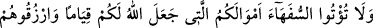
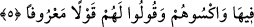

MAL DAYANAKTIR
5- Allah’ın geçiminize dayanak kıldığı mallarınızı aklı ermezlere vermeyin; o
mallarla onları besleyin, giydirin ve onlara güzel söz söyleyin.
Ey velîler, “Allah’ın sizin için geçim kaynağı yaptığı” kendisi sâyesinde ayakta
durduğunuz, belinizi doğrulttuğunuz, zâyi ettiğiniz taktirde kendiniz de zâyi olacağınız
“mallarınızı aklı ermeyenlere”; yani erkek-kadın, yetim veya çocuk ne olursa olsun
malını saçıp savuranlara “vermeyin.”
Mal, kişinin ayakta durmasına ve kendi başına hareket etmesine sebep olduğu için
burada sebebe müsebbibin (sebep olanın) adı verilerek mübalağa yolu ile “ayakta
durma” olarak isimlendirilmiştir. İnsanlar mala çok muhtaç oldukları ve onunla ayakta
durdukları için ‘mal sanki bizzat ayakta durmaları imiş gibi gösterilmiştir.
Allah Teâlâ, âyet-i kerîmede malların esas sâhiplerine mahsus oluşunu, velîlere
mahsus olma mertebesine indirerek bizzat velîlere izâfe etmiştir. Artık yetimlerin
malları, aralarında soy ve neseb birliği olduğundan onları korumaya daha fazla teşvîk
etmek için bizzat velîlerin malı sayılmıştır. Bu, ayrıca “sizin için geçim kaynağı
yaptığı” ifâdesiyle yetim malının bizzat yetimlerin medâr-ı maîşeti kılınması yerine
velîlerin medâr-ı maîşeti kılındığından bahsedilmek sûretiyle te’yid edilmiştir.
“O mallarla onları rızıklandırın, giydirin.” Rızık, Allah’tan olursa sınırsız ihsan
mânâsınadır. Kullarla ilgili olursa muvakkat ve sınırlı olarak yedirip içirme
mânâsınadır. Yâni, “Yetimlere o mallardan yedirin.” demektir. Allah velîlere
“Yetimlere mallarından bir kısmını yedirin.” buyurmamıştır. Aksine ticaret edip
mallarını çoğaltarak yetimlerin rızkını ana mallarından değil, onlardan elde edilen
kârlardan sağlamalarını emretmiştir.
“Ve onlara güzel söz”; gönüllerini hoş edecek yumuşak sözler “söyleyin.”
Kaffâl der ki: “Güzel söz, eğer velîsi bulunduğu küçük çocuksa, velinin, çocuğa bu
malın onun malı olduğunu, kendisinin bu malın sâdece bekçisi olduğunu ve büyüyünce
malını kendisine vereceğini söylemesidir. Velîsi bulunulan şahıs, sefih ise bu taktirde
güzel söz, velînin ona nasîhat etmesi, namaz kılmaya, malını çarçur ve isrâf etmemeye
teşvîk etmesi, malını saçıp savurmanın sonunun, başkalarının eline avucuna bakmak ve
fakirlik içinde kalmak olacağını bildirmesi vb. bu türden sözlerdir. Yetim, reşid olur da
malını mülkünü veliden ister, o da vermezse günahkâr olur.
Âyet-i kerîmede ayrıca, malın hem çok tehlikeli, hem de çok faydalı olduğuna dikkat
çekilmektedir.